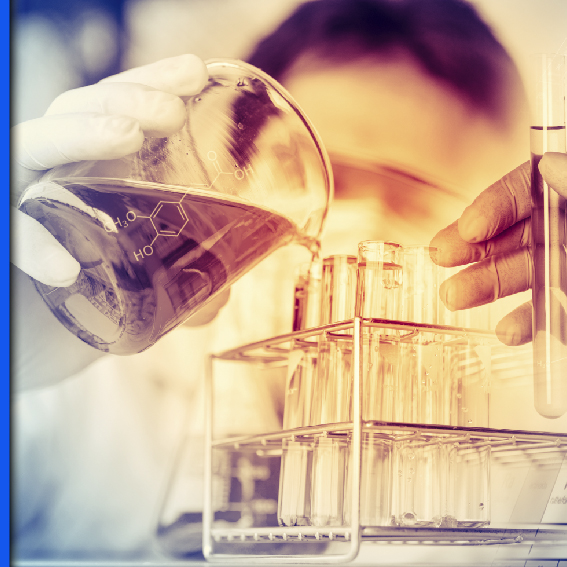
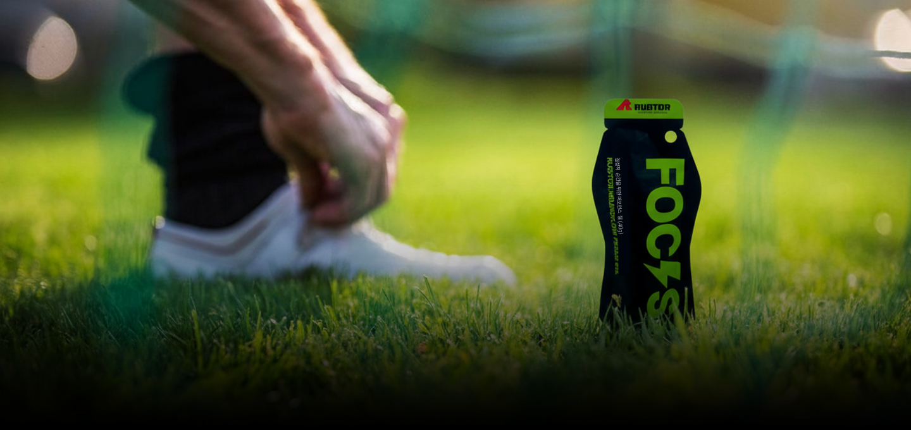

Where Superfoods and Innovation Come Together to Make Life Beautiful from This Moment Forward.
Our goal is to bring positive, healthy changes to people’s everyday lives. Through continuous research and innovation, we are building a better future for generations to come.
-

01 Corporate MissionWe are committed to enriching lives through healthy nutrition, delivering both wellness and beauty. Our focus is on the research and development of superfood-based health foods and sports nutrition products that support healthier, more active lifestyles.
-
02 Corporate Values
Guided by our core values of Sustainability, Innovation, and Partnership, we are committed to expanding our presence in global markets while creating long-term value for customers, partners, and communities.
-
01 TEANIQUE
A convenient powdered stick tea developed to make traditional Ssanghwa tea more enjoyable for everyone, combining its time-honored wellness benefits with the sweet, refreshing flavor of peach.
-

02 RUGTORA mental performance product formulated with ingredients such as L-theanine, designed to support sustained focus and provide convenient energy replenishment for active lifestyles.